Introduction to Cybersecurity Awareness
Cybersecurity awareness, common threats, and safer online habits.
CybersecurityAwarenessHP LIFE
All certificates are displayed here. Click any card to open the image in a larger preview.
Cybersecurity awareness, common threats, and safer online habits.
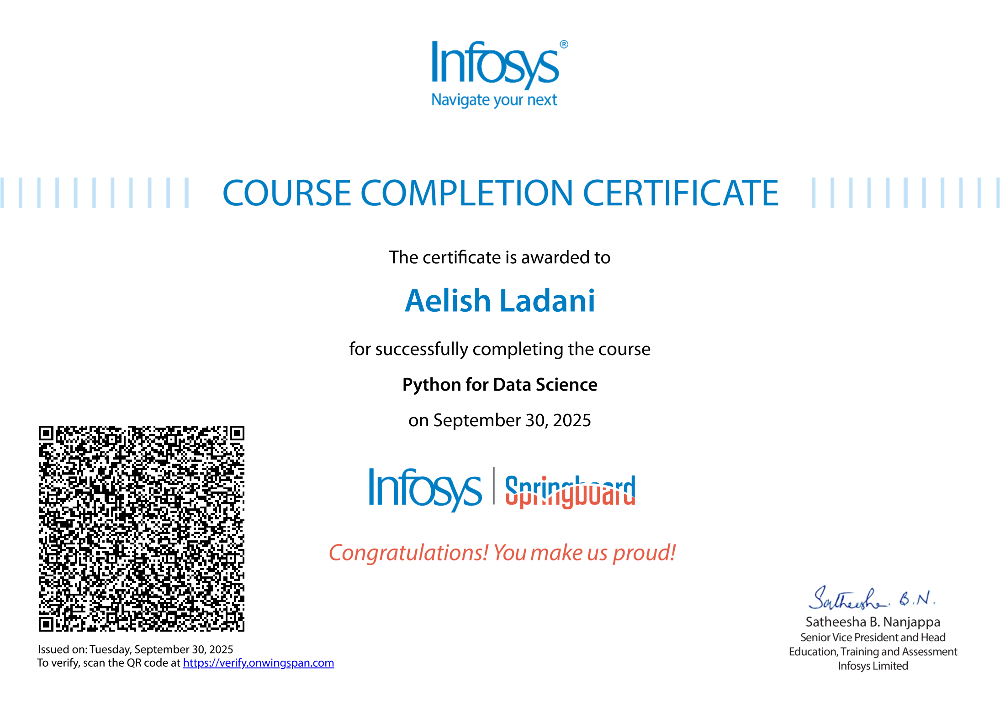
Python foundations for data analysis and data science workflows.
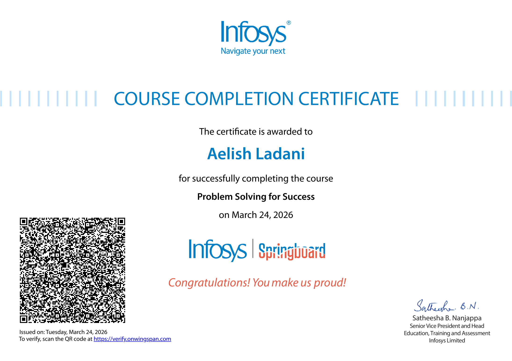
Structured problem solving, reasoning, and practical decision-making.
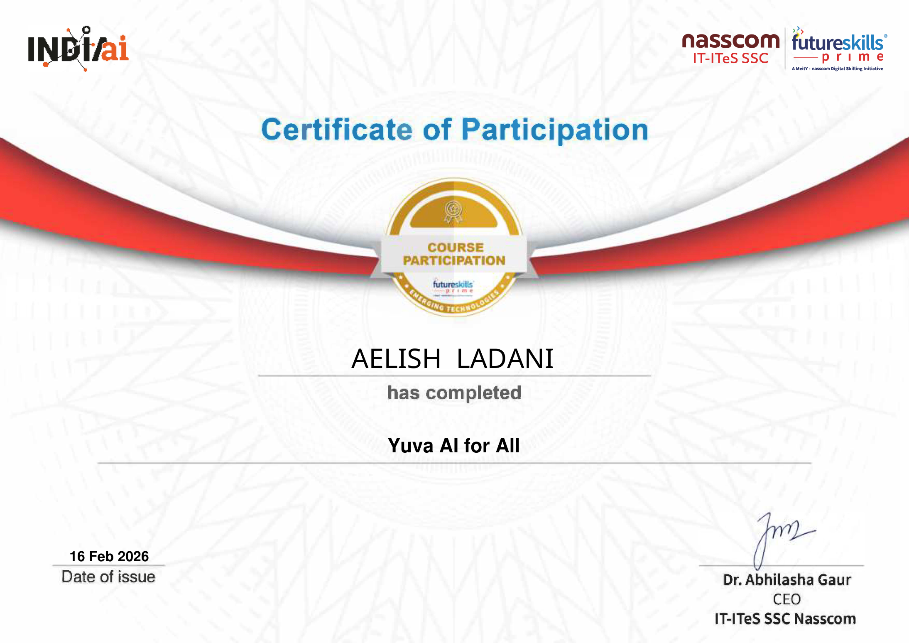
Introductory AI awareness and digital skilling participation.
Communication, presentation, soft skills, interview skills, and AI basics.
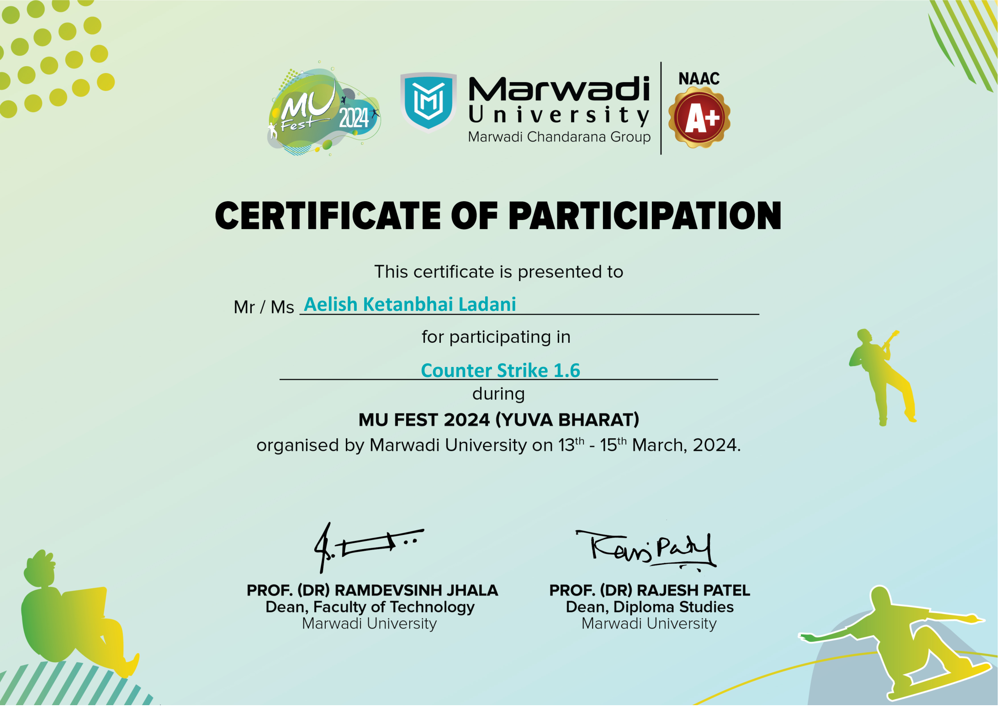
Event participation certificate from MU Fest 2024.
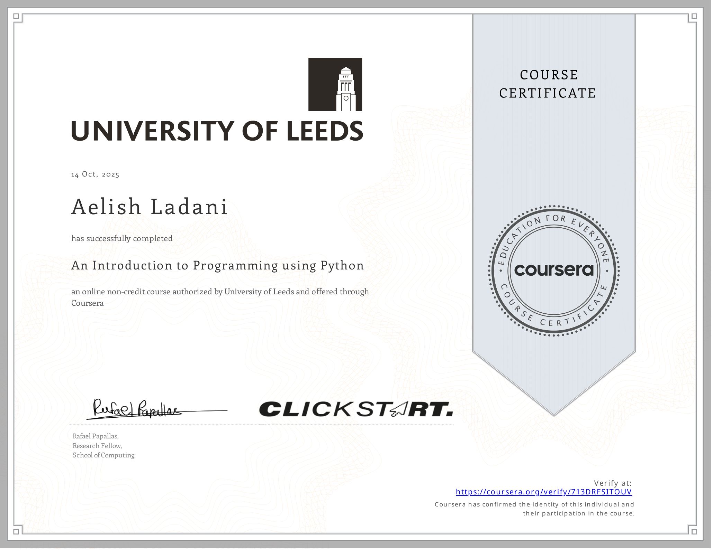
Python programming basics through a university-backed online course.
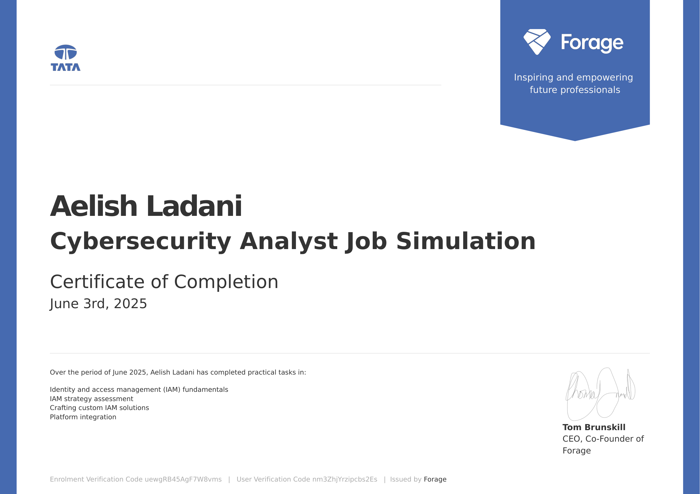
IAM fundamentals, strategy assessment, and platform integration tasks.
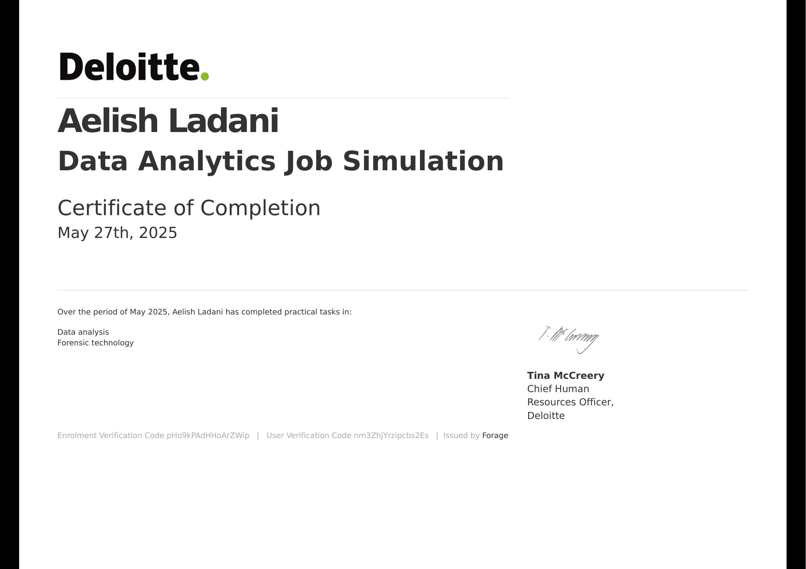
Practical data analysis and forensic technology tasks.
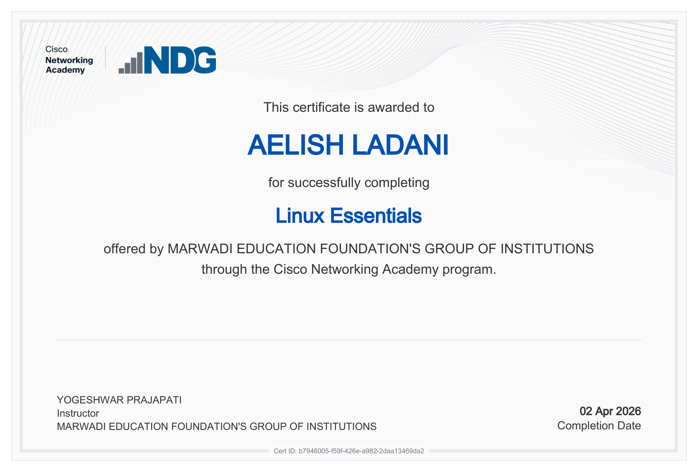
Linux fundamentals for system administration and command-line confidence.
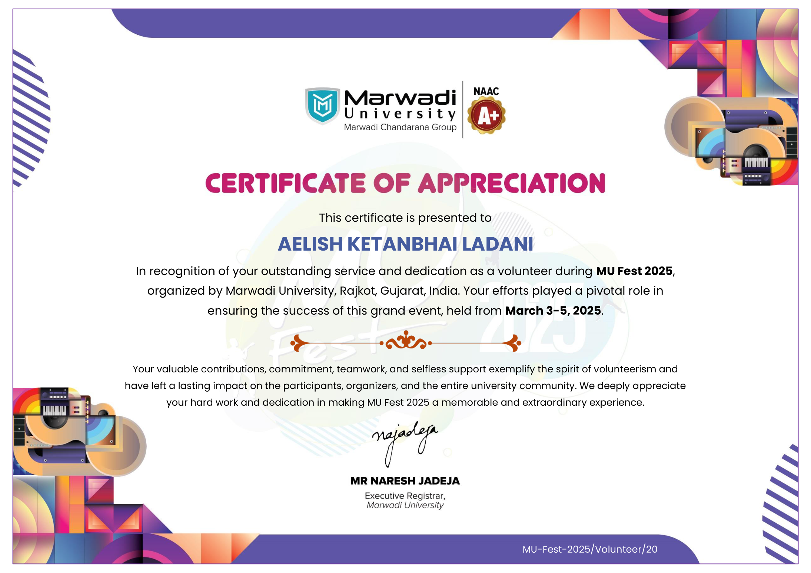
Volunteer service supporting coordination, logistics, and event execution.
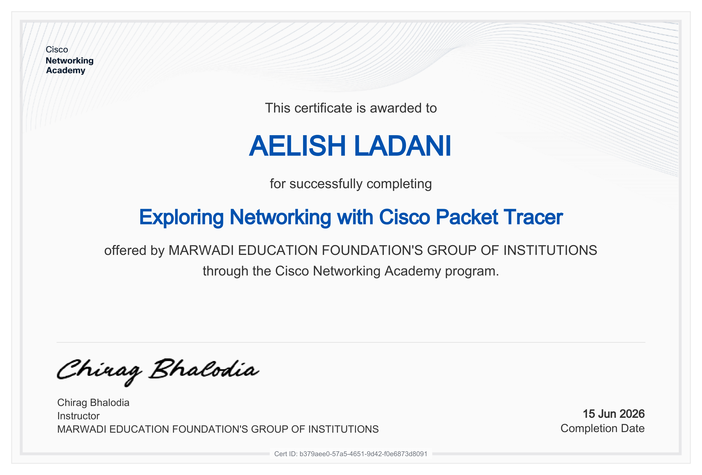
Networking exploration and packet tracer learning experience.
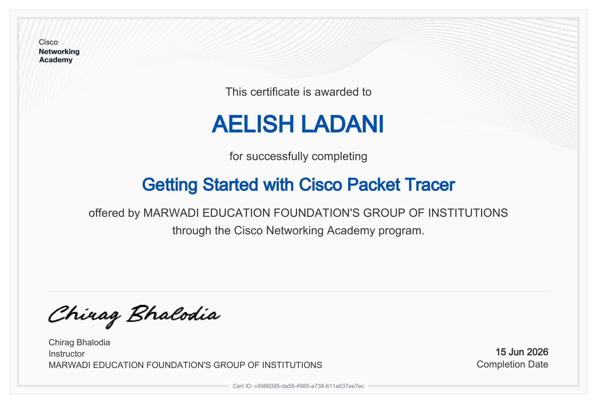
Hands-on Packet Tracer basics for building confidence with network simulation.
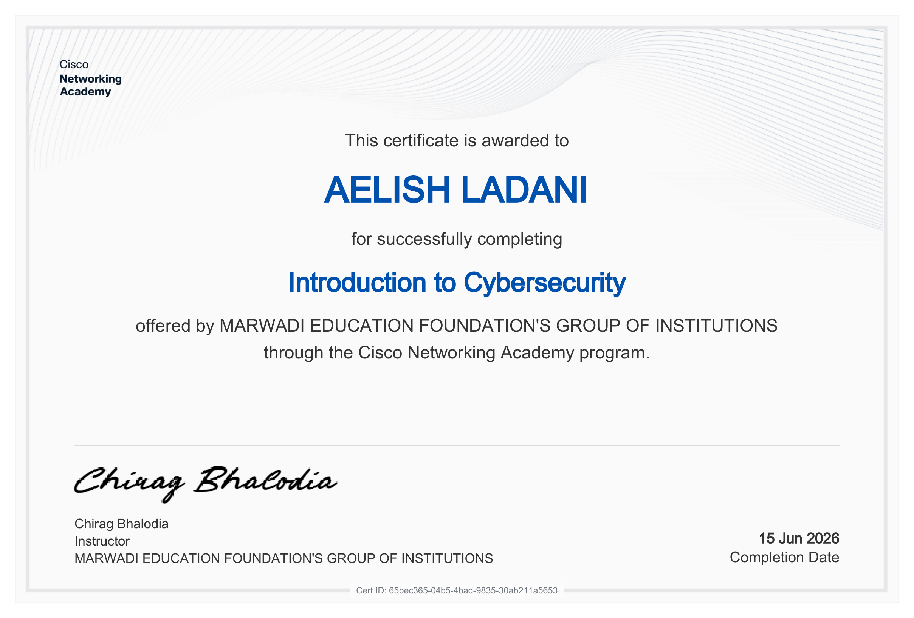
Introductory cybersecurity concepts and safe digital practices.